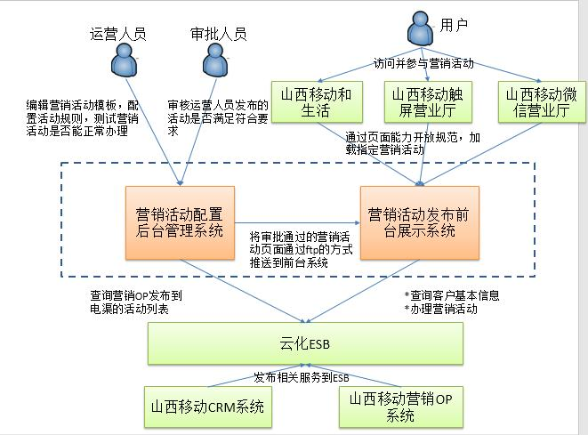
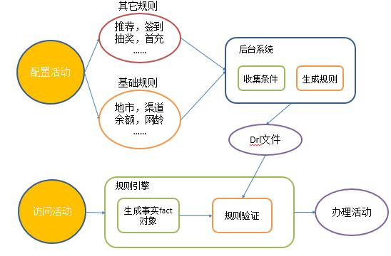
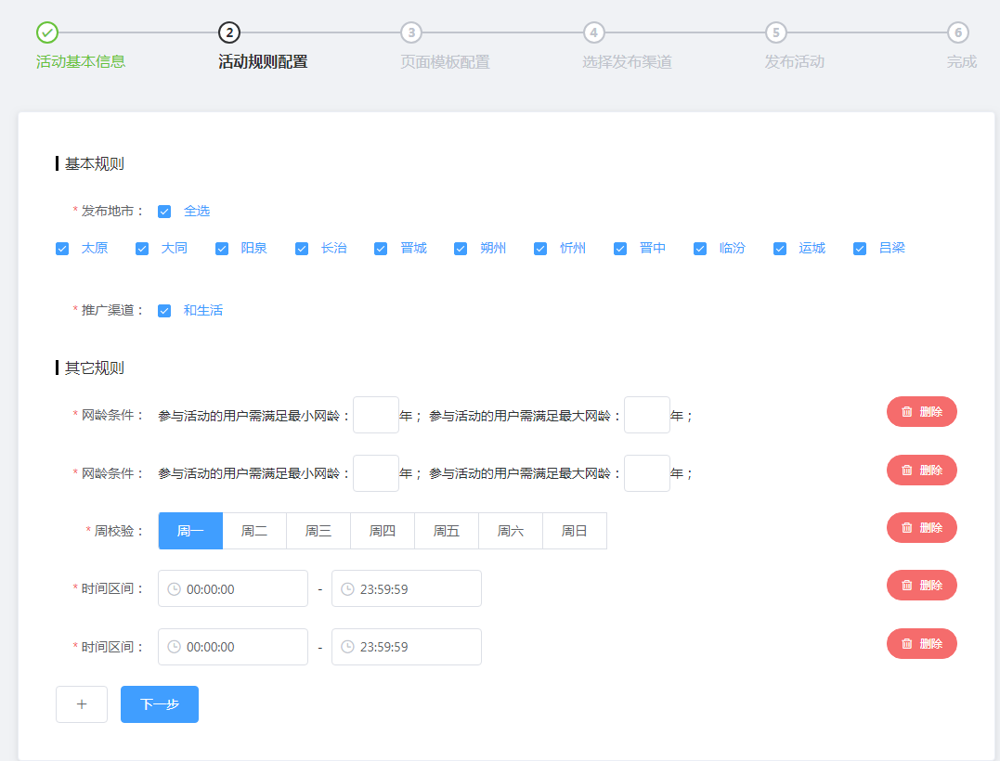
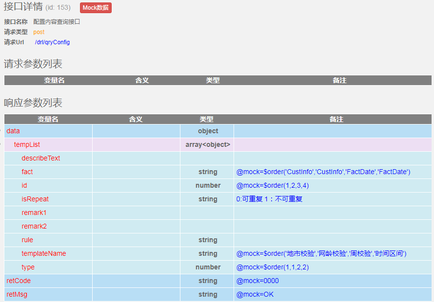
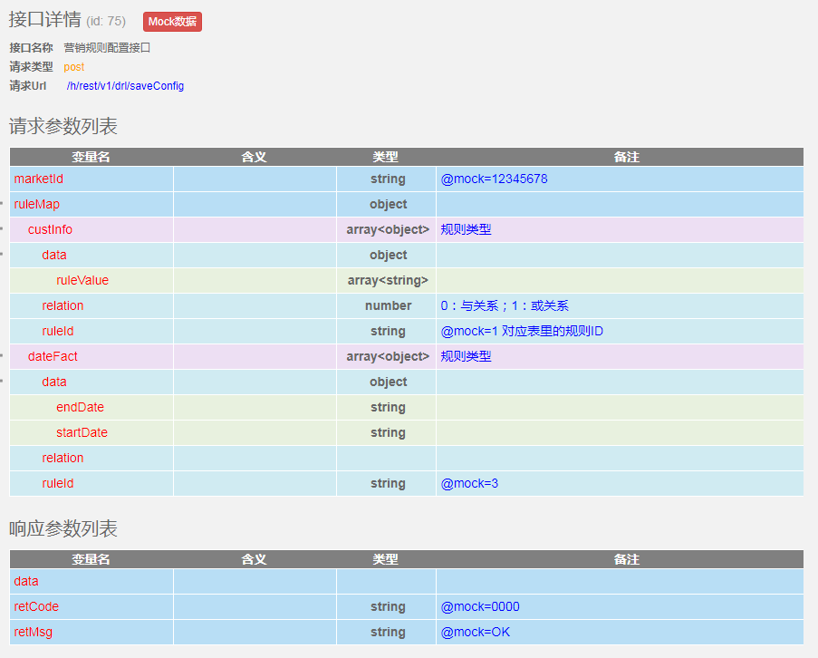
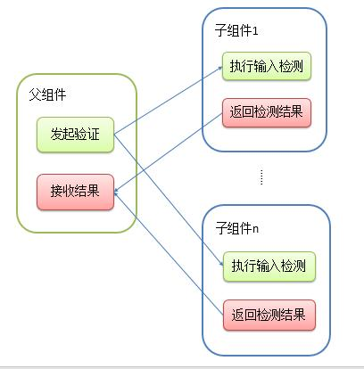

营销活动规则配置VUE实现
背景
山西移动电子渠道营销项目中，需要实现营销活动的可视化配置能力 
其中一部分重点内容是如何实现活动规则的可视化配置；
功能描述
- 营销活动通常意味着需要条件，满足某些条件，才可以参加活动，这些条件我称之为“规则”
- 在营销能力提升项目中，需要在后台编辑营销活动时，同时给营销活动设置“规则”；发布至前台工程后，可根据后台配置的“规则”进行验证； 
需求细化
- 此功能并不是针对某个营销活动，而是通用型的解决方案；“规则”要不断添加积累
- 已有“规则”需要支持各种排列组合；
- “规则”的编辑和修改需要实时生效，以应对营销活动的频繁变化；
界面设计
 * 规则分为基础规则（必选规则），以及其他规则（可选规则） * 可选规则可动态添加删除 * 部分规则可重复添加 * 每个规则都需要进行输入验证 * 提交时要对所有规则进行验证
接口设计
 
前端设计重点
每个规则抽象为单独的VUE组件，需要在父组件中动态加载子组件；
动态组件可以通过 Vue 的 <component> 元素加一个特殊的 is 特性来实现：
<component v-bind:is="currentTabComponent"></component>在上述示例中，currentTabComponent 可以包括
- 已注册组件的名字，或
- 一个组件的选项对象
如何获取界面上已经添加的组件
可以通过给子组件增加ref属性，为这个子组件赋予一个ID引用。
<base-input ref="usernameInput"></base-input>现在已经定义了这个 ref 的组件里，可以使用：
this.$refs.usernameInput来访问这个 <base-input> 实例
通过这种方式，我们可以在添加组件是记录组件的ref，在提交验证时，通过记录的ref属性，找到页面上已经添加的子组件（规则组件）
for (let ref in refs) { // 查找页面中存在的子组件
if (Object.prototype.toString.call(refs[ref]) === '[object Object]') {
refs[ref].submitForm()
}
if (Object.prototype.toString.call(refs[ref]) === '[object Array]' && refs[ref].length > 0) {
refs[ref].forEach((each) => {
each.submitForm()
})
}
}规则内容校验，每个规则都需要进行输入验证，组件动态加载过程如何与验证逻辑绑定
规则的输入校验如果都放在父组件进行，需要处理太多的交互逻辑，不利于代码的维护； 因此，我把每个规则的输入校验，都放在各子组件内部进行，父组件只需要知道结果就可以了
当父组件需要发起验证时，向各个子组件发起验证请求，子组件收到请求后，执行输入校验，并把验证结果通过emit事件通知给父组件；父组件收集子组件的通知，并判断是否全部通过，只有全部通过才可以继续执行； 
submit () {// 向子组件发起验证请求
let resCollect = this.checkResult = {}
let refs = this.$refs
this.ruleMap = {}
this.dataItems = []
for (let ref in refs) {// 向子组件发起验证请求
if (Object.prototype.toString.call(refs[ref]) === '[object Object]') {
refs[ref].submitForm()
}
if (Object.prototype.toString.call(refs[ref]) === '[object Array]' && refs[ref].length > 0) {
refs[ref].forEach((each) => {
each.submitForm()
})
}
}
}
checkResultFn (res) { // 接收子组件的通知，并记录结果
if (this.checkResult[res.name] !== undefined) {
this.checkResult[res.name] = this.checkResult[res.name] && res.result
} else {
this.checkResult[res.name] = res.result
}
}submitForm() {
// 执行表单输入检测
this.$refs['form'].validate((valid) => {
// 将结果通知给父组件
this.$emit('checkResult', {
name: this.name,
result: valid,
data: this.form.checkedChannels
})
})
}